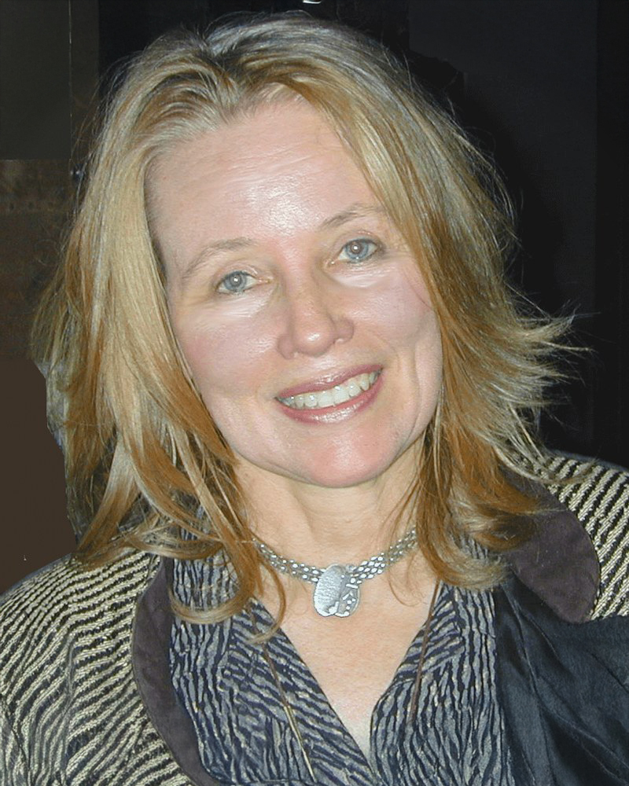

Free University of Brussels (VUB), Brussels, Brussels-Capital Region, Belgium

Observing diverse hypothesis construction strategies of origins of life theorists revealed hidden inferences that led to the APR Hypothesis that origins of life required complementary co-bootstrapping cycles, Autonomy and Pattern Recognition (APR), to co-define life and mind. On a micro scale, the APR Hypothesis connects origins of life and mind. On a macro scale, scarcity of material evidence drives origins of life transdisciplinary communities of scientists to harness metaphors, thought experiments, and critical thinking to construct their hypotheses. Whether the origin of life was continuous, or ratcheted through discrete threshold events, is debated, as whether light is a wave or particle was once debated – all true. Evolution, autonomy, and pattern recognition, which together co-produced life, are all continuous. Non-life evolved into life continuously, but one or more ratcheted discrete events occurred, threshold transition(s) when non-living, mechanistic pattern recognition (externally governed) ratcheted into life’s capacity for behavioral pattern recognition (internally governed). Ricardo Solé suggests that the origin of life occurred through phase transitions and bifurcations (Solé 2011, 2025; Choi 2020). Whether a single discrete ratchet occurred at the threshold between mechanistic and behavioral pattern recognition, or whether smaller scaffolding transitions occurred, the APR Hypothesis posits that one or more thresholds were crossed at origins of life, when autonomy and pattern recognition joined to form a single, internally governed feedback cycle (Gill 2011, 2013). Theorists constructing origins of life hypotheses face obstacles that imply an assumed precursor hypothesis. Obstacles for origins of life theorists include 1) lack of an agreed definition of life; 2) the combinatorial improbability of non-life becoming alive; and 3) the three-pronged debate about alternative hypotheses of what occurred first in origins of life and whether origins were discrete or continuous. Although whether origins of life occurred with the first instance of replication, metabolism, or enclosure is debated, all three hypotheses assume that first life was able to receive, interpret, and respond to signals to replicate, perform thermodynamic functions and distinguish itself from other to remain alive. This assumption implies a precursor hypothesis, that origins of life required complementary co-bootstrapping cycles, Autonomy and Pattern Recognition (APR), to co-define life. Some origins of life debates can be resolved via this integrating framework, within which competing theories about origins of life are complementary. Studying the challenge of constructing origins of life hypotheses without access to the original event, and without material evidence of what occurred, not only led to the APR hypothesis but also showed how scientific method has evolved over the last century. The APR Hypothesis reflects the evolution of scientific method from a predominantly mechanistic focus to include the cognitive dimension. The rapid evolution of A.I. raises questions about our reliance on a 20th century “objective” model of scientific method, passively analyzing objects studied. A.I. may force us to acknowledge the roles of emergence, pattern recognition, and the subjective reporting of the observer/ prompter in both A.I. and human discovery (Gill 2012).
https://gail.world/bio-zanngill/
https://gail.world/leap-lab